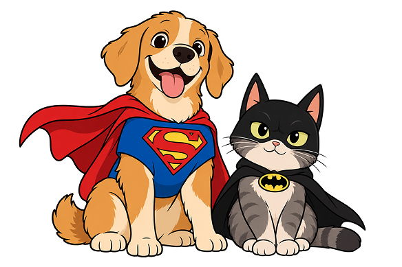

ZOONOSIS Y
BIENESTAR ANIMAL


NO MIREMOS A OTRO LADO
Proteger a los animales es una responsabilidad de todos y una obligación legal. Si sos testigo de situaciones de crueldad, abandono o negligencia, no mires para otro lado: conocé tus derechos, informate sobre cómo actuar y realizá la denuncia para que las autoridades puedan intervenir de inmediato.

ADOPCIONES Y HOGAR DE TRANSITO
Adoptar es sumar un compañero a tu vida y comprometerte a cuidarlo todos los días. Acá podés conocer a los perritos que esperan una familia, descubrir cómo ofrecerles un hogar de tránsito hasta que sean adoptados e informarte sobre la adopción de equinos.
TU MASCOTA HÉROE
Tu compañero también puede dar una mano!
En General Pueyrredon ya está en marcha la campaña "Tu mascota héroe" (Ordenanza 25922), impulsada junto a Zoonosis y Bienestar Animal, con veterinarias habilitadas para recibir donaciones de sangre gratuitas de animales.

INFORMACIÓN ÚTIL
TENENCIA
RESPONSABLE
Consejos sobre educación, socialización, controles sanitarios, castración, pautas de convivencia, qué hacer ante mordeduras y otros datos importantes
PERROS POTENCIALMENTE PELIGROSOS
Enterate de qué dice la Ordenanza 22.031, qué razas entran en la categoría y cómo hacer el trámite del chip y la credencial para andar en la calle.
RECOMENDACIONES ANTE UN MURCIELAGO
Consejos clave sobre cómo actuar si encontrás uno, qué hacer ante una mordedura a personas o animales, y los datos de contacto de Zoonosis y el Centro Antirrábico.

REGISTRO DE
PASEADORES Y ADIESTRADORES
¿Querés trabajar paseando o entrenando perritos? Enterate de los requisitos obligatorios para sumarte al registro municipal, desde la presentación de tu CV hasta la acreditación de idoneidad ante Zoonosis y el Colegio de Veterinarios.